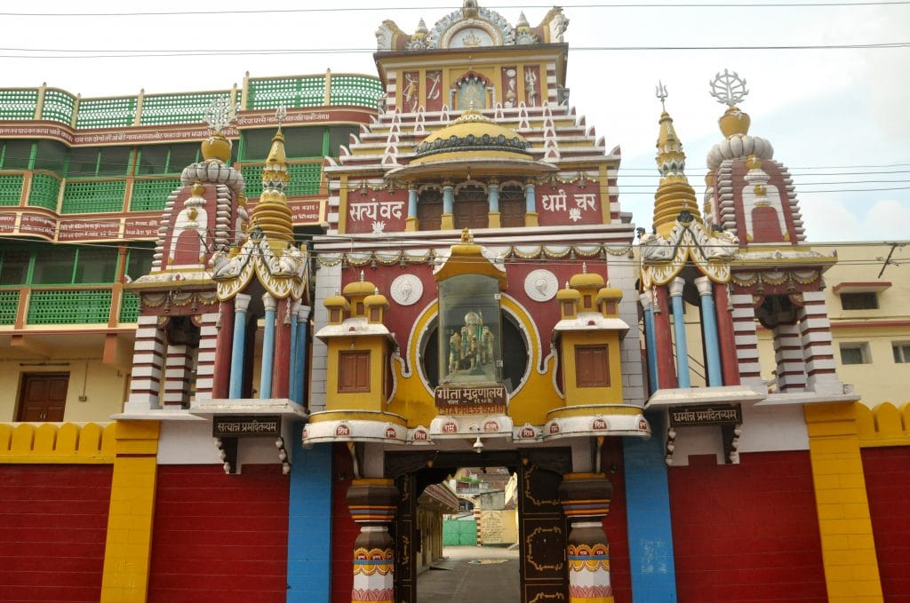
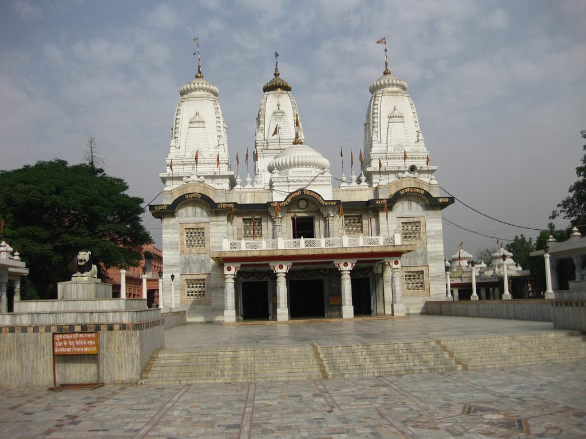

Explore Iconic Places
Discover the cultural and historical landmarks that define the spirit of Gorakhpur.

Gita Press
A famous cultural institution known for publishing religious literature.

Geeta Vatika
A spiritual and cultural place associated with devotional traditions.

Gorakhnath Temple
A major spiritual and cultural landmark connected with the Nath tradition.

Vishnu Temple
A historic religious site known for its cultural and architectural importance.

Imambara
A historic cultural landmark associated with Gorakhpur's heritage.

Chauri Chaura Shaheed Smarak
A historic memorial associated with India's freedom movement.

Dohariya Shaheed Smarak
A historic memorial connected with the freedom movement of 1942.

Maghar
A historic cultural and spiritual place associated with Sant Kabir.